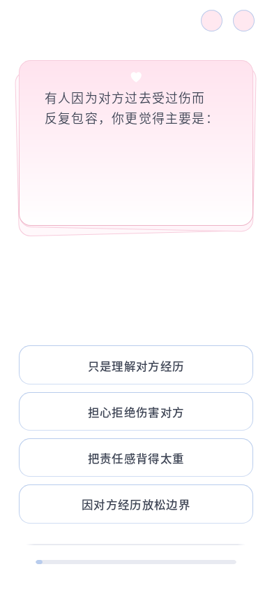
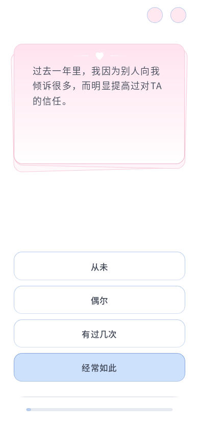
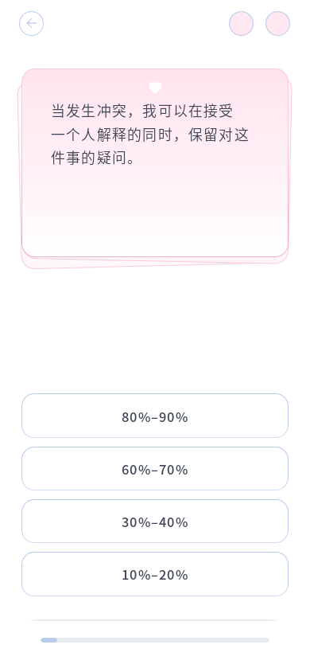

同题前后截图



2026-10-13 · 本地 Firefox · 前后固定 C10，尺寸单位为 CSS 像素。
下面的独立预览使用项目的实际卡片样式。点击“播放过渡”观察整叠上提、底卡展开与归位。



实际捕获 3 个卡片过渡动画。前卡保持最上层，两张底卡在反馈和换题归位后均持续存在。
十视口全部 96 道题共 960 组通过：底卡在页面边缘内、距选项至少保留安全间距、主卡文字完整、题框和选项同宽、底部进度可滚动到达、重复 resize 稳定。普通模式的几何测量使用即时滚动，避免读到平滑滚动中间帧；窄屏长题触发滚动条时额外使用同题前后比较，主卡坐标与尺寸一致。
| 视口 | 结构 | 边界 | 逐题检查 |
|---|---|---|---|
| 320 × 572 | 前卡 + 两张倾斜底卡 | 无遮挡、无横向裁切 | 96/96 |
| 360 × 640 | 前卡 + 两张倾斜底卡 | 无遮挡、无横向裁切 | 96/96 |
| 375 × 667 | 前卡 + 两张倾斜底卡 | 无遮挡、无横向裁切 | 96/96 |
| 390 × 844 | 前卡 + 两张倾斜底卡 | 无遮挡、无横向裁切 | 96/96 |
| 430 × 932 | 前卡 + 两张倾斜底卡 | 无遮挡、无横向裁切 | 96/96 |
| 768 × 1024 | 前卡 + 两张倾斜底卡 | 无遮挡、无横向裁切 | 96/96 |
| 1440 × 900 | 前卡 + 两张倾斜底卡 | 无遮挡、无横向裁切 | 96/96 |
| 844 × 390 | 前卡 + 两张倾斜底卡 | 无遮挡、无横向裁切 | 96/96 |
| 899 × 900 | 前卡 + 两张倾斜底卡 | 无遮挡、无横向裁切 | 96/96 |
| 900 × 899 | 前卡 + 两张倾斜底卡 | 无遮挡、无横向裁切 | 96/96 |
普通动画中间帧、归位帧及减少动态效果下的静态层叠通过。完整 28 题、上一题、返回未答题、刷新恢复、关于页往返和 100%/200% 缩放通过。未实测其他浏览器或实体手机。
Node 测试 13/14，唯一失败仍是已有题库维护源与运行 JSON 不一致。仅修改答题 HTML、卡片 CSS 及项目说明；题库、评分和答题脚本未改，没有新增依赖。